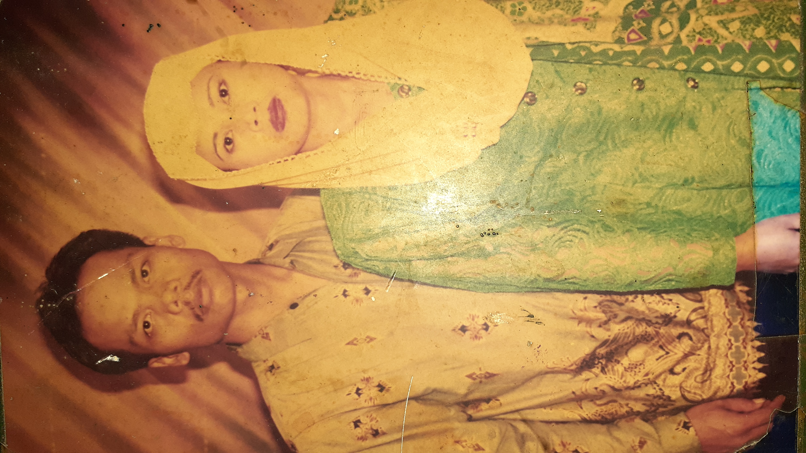
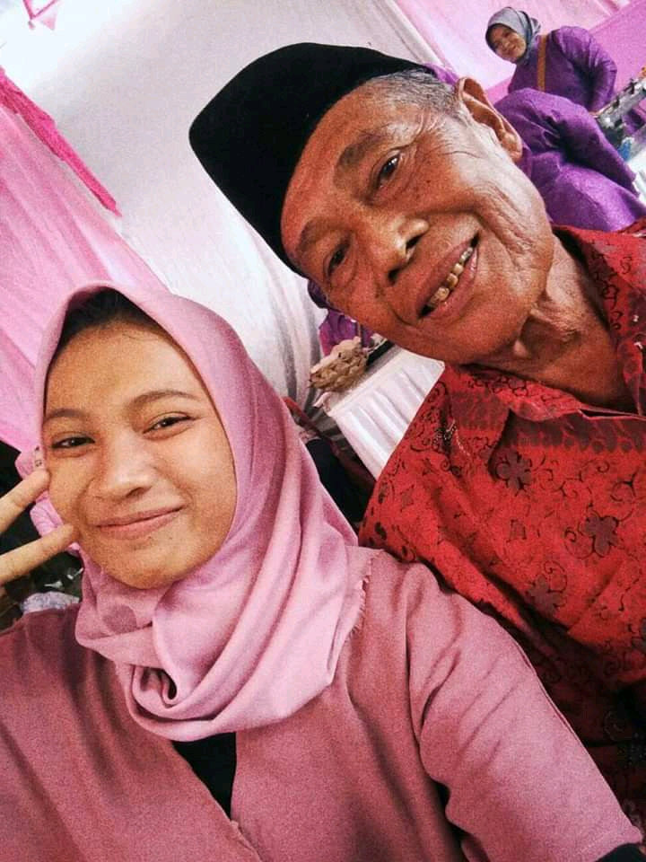
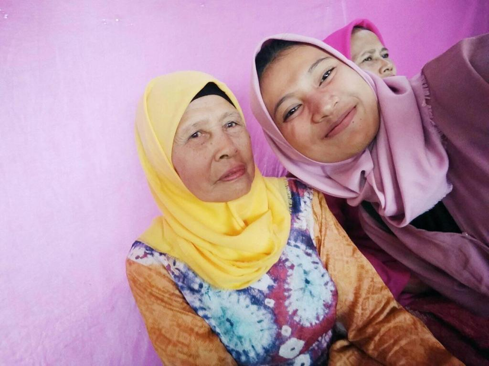
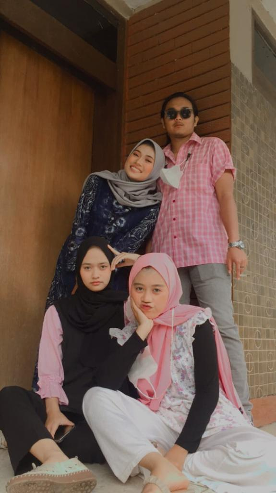
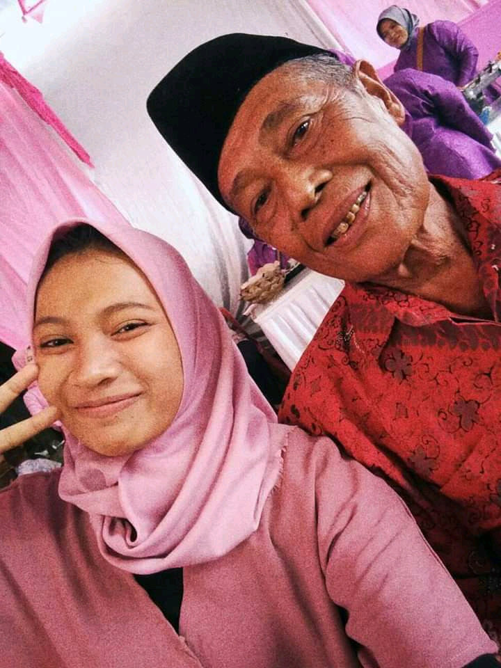
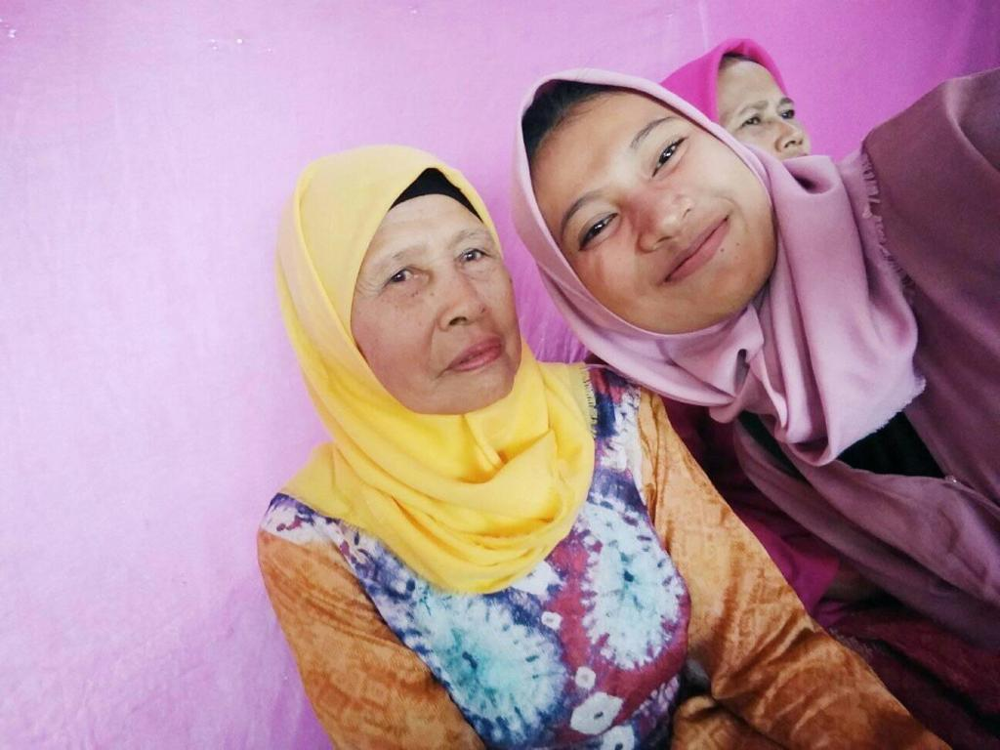
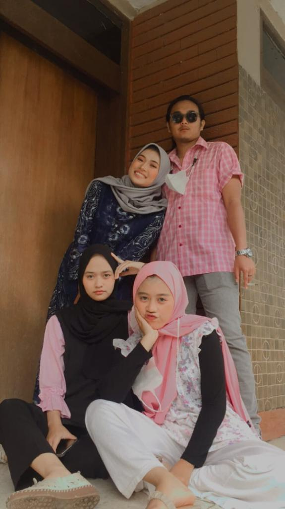

Halloo teman teman nama saya Mufhnie Alviani kalian bisa panggil saya jeje atau mufni, lahir di Bandung 14 Januari 2001
dengan berat 3,4KG. Saya dilahirkan di keluarga yang alhadulillah bisa dibilang harmonis atau keluarga goals wkwk
saya anak ke 3 dari 4 saudara dan saya tinggal di Kp. Bojong Monyet 02/06
tapi saya yakin kalian pasti jarang banget bahkan tidak tahu dimana itu bojong monyet hehe...
dan riwayat pendidikan saya pernah bersekolah TK di TK Qurota ayun, SDN Haurpugur 1 dan SDN Pasirhalang 3,
SMP FK Bina Muda Cicalengkan, SMA Bina Muda Cicalengka dan alhamdulillah saya lanjut Kuliah di Universitas Ma'soem
alhamdulillahnya udah semester 7 dan sebentar lagi lulus yeaayyyy.....
Oh iyaa mungkin saya tidak mempunyai hobby khusus atau dibilang tidak mempunyai hobby karena kerjaannya cuman rebahan
dan berharap sukses dimasa yang akan datang aneh kan tapi berdoa dulu aja wkwk dari kecil saya sangan menginginkan untuk
menjadi seorang guru tapi Allah SWT berkehendak lain dan mempunyai jalan yang sangat bagus untuk kehidupan saya.
dan saya mempunyai support system sendiri dan mejadi penyemangat disaat down yaitu keluarga

 
saya mempunyai teman dekat eh bukan teman dekat tapi sepupu dari sekian banyak sepupu bisa dibilang 24/7 dengan mereka


  saya mempunyai teman dekat eh bukan teman dekat tapi sepupu dari sekian banyak sepupu bisa dibilang 24/7 dengan mereka 